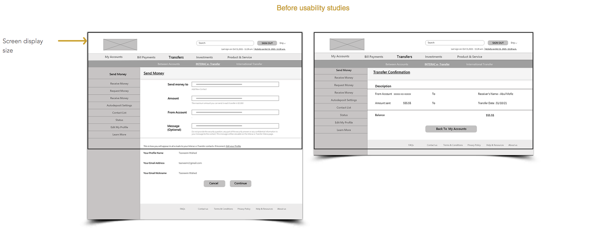

Project Overview
Project Vision
LocaBank is a local bank that offers typical banking system. The typical user is between 22-65 years old, and most users are early career professionals or senior professionals. LocaBank’s goal is to make banking fast, and easy for all types of users.
Problem
Available online banking websites have cluttered designs with unnecessary information, and confusing balance transfer processes.
Goal
Design a LocaBank’s website to be user friendly by providing clear navigation and a easy way to transfer balance.
My Role
UX designer. Designing an website for LocaBank from conception to delivery.
Responsibilities
Conducting interviews, paper and digital wireframing, low and high-fidelity prototyping, conducting usability studies, accounting for accessibility, iterating on designs and responsive design.
Duration
October 2021 to November 2021
User Research
Understanding the User
I conducted user interviews, which I then turned into empathy maps to better understand the target user and their needs. I discovered that many target users do online banking and find it easy rather than visiting a bank and stand in the que. However, many banking websites are overwhelming and confusing to navigate, which frustrates many target users. This caused a normal experience to become challenging for them.
User Pain Points
1. Navigation
Online banking website designs are often busy, which results in confusing navigation
2. Iteration
Small buttons on websites make item selection difficult, which sometimes lead users to make mistakes
3. Unnecessary information
Online banking websites provide unnecessary information, which makes the web page cluttered with information
Persona and Problem Statement
Based on the interviews and survey findings, I have created two personas who are my target users.
Rosy is a busy doctor and mother who needs easy website navigation for online balance transfer system because they want to send money to their children easily.
"I love online banking as I don't have the energy and time to go to the bank."
- Name -Rosy
- Age -56 years
- Education -M.B.B.S.
- Hometown -Edmonton, Canada
- Family -Spouse and daughter
- Occupation -Doctor
Goals
- - Wants easy navigation system.
- - Wants less cluttered navigation and layout for easy browsing.
- - Wants bigger buttons and improved placement for more accessible navigation.
Frustrations
- - "I struggle with the size and placement of buttons."
- - "Onilne banking website layouts and navigation are complicated and confusing."
- - "Too much information on a single page frustrates me easily."
- - Do not notify after balance is transferred.
Rosy is a 56 year old doctor who lives with her family. She wrks during the day and after work she has to attend her patients, and do not have enough time to go to bank for balance transfer to her daughter studying abroad.
They are frustrated with their online banking experience on mobile websites because of the size of the buttons and complicated navigation. They also feel disappointed that sometimes the balance they transfer via the website don't notify if the receiver has received the money or not.
Rayan is a busy architect and part-time worker who needs a website for local bank to transfer balance because they want to send money to their parents for their regular expense.
"I prefer online banking as I do not like to go to the bank and stand in the que."
- Name -Rayan
- Age -35 years
- Education -Master's
- Hometown -Toronto, Canada
- Family -Lives alone
- Occupation -Associate Architect
Goals
- - Wants an easy navigation system.
- - Wants to easily transfer balance.
- - Wants a fast balance transfer system with add free web page.
Frustrations
- - "I struggle when it takes too long to transfer the balance."
- - "Online banking websites have too much unnecessary informations on their websites"
Rayan is a 35-year-old architect and part-time sales co-worker who lives alone and have to send money to their family in their hometown. They work during the day and sometimes at night, and do not have time to go to the bank to transfer balance to their family.
They are frustrated with their online banking experience on websites because of the complicated navigation and too much unimportant information. They also get frustrated when the money transfer takes a long time.
User Journey Map
I created a user journey map of Rosy’s experience using the site to help identify possible pain points and improvement opportunities.
Persona : Rosy
Goal: An easy way to transfer balance to her child.
Sitemap
Sketches to generate ideas
Paper Wireframes
Next, I sketched out paper wireframes for each screen of my website, keeping the user pain points about navigation, browsing, and balance transfer flow in mind.
Paper Wireframe Screen Size Variation
Because LocaBank’s customers access the site on a variety of different devices, I started to work on designs for additional screen sizes to make sure the site would be fully responsive.
Digital Wireframes
After ideating and drafting some paper wireframes, I created the initial designs for the LocaBank website. Prioritizing useful button locations and visual element placement on the home page was a key part of my strategy.

Digital Wireframes Screen Size Variations
After ideating and drafting some paper wireframes, I created the initial designs for the website. Prioritizing useful button locations and visual element placement on the home page was a key part of my strategy.
Test & Iteration
Usability Study Findings
These were the main findings uncovered by the usability study:
1. Password
Users were not able to save their password, they wanted to save it.
2. Focus
Users weren’t able to easily see where they were on the website. They wanted it to be highlighted of focused.
3. Confirmation
Users wanted a transfer confirmation page before the send the money.
Iteration on Design
Mockups
Based on the insights from the usability study, I made changes to improve the site’s balance transfer flow. One of the changes I made was adding a transfer confirmation page for the users to be sure before sending money. This allowed users more assurance to transfer their balance.

To make the balance transfer flow even easier for users, I highlighted the area so that they can know their location on the website.
Mockups : Screen Sizes Variations
I included considerations for additional screen sizes in my mockups based on my earlier wireframes. Because users use websites from a variety of devices, I felt it was important to optimize the browsing experience for a range of device sizes, such as mobile and tablet so users have the smoothest experience possible.
Accessibility Considerations
1. Headings
I used headings with different sized text for clear visual hierarchy
2. Landmarks
I used landmarks to help users navigate the site, including users who rely on assistive technologies
3. Screen Reader
I designed the site with alt text available on each page for smooth screen reader access
High-fi Prototype
The hi-fi prototype followed the same user flow as the lo-fi prototype, and included the design changes made after the usability study.
To interact with the Lo-fi prototype click here
Going Forward
Takeaways
Impact
Our target users shared that the design was intuitive to navigate through, more engaging with the images, and demonstrated a clear visual hierarchy.
What I Learned
I learned that even a small design change can have a huge impact on the user experience. The most important takeaway for me is to always focus on the real needs of the users when coming up with design ideas and solutions.
Future Steps
I am proud of what I have designed. However, the website is never finished.
Testing
Conduct follow-up usability testing on the new website.
Ideation
Identify any additional areas of need and ideate on new features.